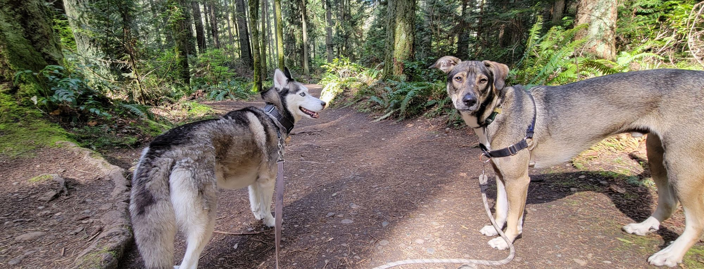

Welcome to Frankie and Friends!
About Us
Frankie and Friends was born out of a deep love for the outdoors, a passion for animals, and a desire to share the beauty of nature with our furry friends. Founded by a Montanan with a heart as big as the endless skies above, our dog walking service is dedicated to providing unforgettable adventures for dogs and their owners alike.
Our founder, Emma, grew up surrounded by the rugged beauty of Montana, spending her days exploring the vast forests, towering mountains, and crystal-clear rivers that make this state a paradise for outdoor enthusiasts. With a loyal companion by her side every step of the way, Emma developed a profound appreciation for the bond between humans and animals and the joy that comes from exploring the great outdoors together.
At Frankie and Friends, we believe that every dog deserves the chance to experience the freedom, excitement, and wonder of the natural world. That's why we offer more than just your average walk around the block – we offer outdoor adventures that will leave your dog wagging their tail with delight. Whether it's a leisurely stroll through the pine-scented forests, a romp along the shores of a pristine mountain lake, or a hike to a breathtaking vista with panoramic views of the Pacific Northwest, we'll tailor each outing to suit your dog's individual needs and preferences.
But our commitment to adventure doesn't end with the dogs – it extends to our human clients as well. We know that life in Washington is all about embracing the great outdoors, and we want to help you make the most of every moment you spend with your four-legged friend. That's why we offer personalized service, expert guidance, and insider tips to help you and your dog experience the best that Washington has to offer, whether you're a seasoned outdoor enthusiast or a city slicker looking to explore the wild side for the first time.